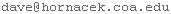
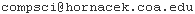

Basic Info
Instructor: Dave
Feldman
Email: 
Office: Second Floor, Turrets Annex
Mailing List: 
Problem Solving Session: Wednesdays, 6:30 -- 8:00, Deering Common
Office Hours: By appointment (see my schedule)
Tutors: None
Course Goals
- I want you to gain a basic, enduring understanding of the core elements of Python.
- I want to develop a careful, systematic, and effective programming style and to use programming to hone your intellect.
- I want you to gain experience creating and implementing algorithms and be able to apply algorithmic thinking and programming skills to areas of your interest.
- I want you to experience the challenge and excitement of creating and implementing your own programs.
- I want you to gain an awareness of the range and scope of problems that computer scientists and programmer work on, and some of the big issues in these fields.
- I want you to leave this course with the background and skills to further your working knowledge of Python and other programming languages.
Official Description
This course is an intensive introduction to computer science for
students with little or no programming experience. The primary goal
for this course is to provide students with a solid foundation in
Python, a modern, high-level, object-oriented programming language. A
secondary goal is for students to gain an initial introduction to
algorithmic approaches to interdisciplinary
problem-solving. Constructing effective software involves considerable
creativity and judgment, and there are general theoretical principles
and practical considerations that inform and guide this
construction. Students will gain an introduction to these general
principles and will also gain experience applying these principles to
practical problems. Students who successfully complete this class
will: gain a solid, practical understanding of the core python
language, including control statements, functions, simple data
structures, and input/output; learn how to extend their knowledge of
python or other languages; develop good programming techniques; and be
able apply algorithmic thinking and programming skills to areas of
their interest. This course is designed for students interested in
using programming in a wide range of areas, including as a tool for
research in biology, economics, statistics, and other mathematical
sciences. Additionally, this class will help prepare students to write
web applications or applications for mobile devices. This course is
also well suited for students who do not have a particular area of
programming application in mind, but who simply wish to experience the
challenge and excitement of designing and implementing
algorithms. Evaluation will be based on weekly programming exercises
and a final programming project. Level: Introductory. Prerequisites:
none. Lab Fee: none. Class size: 12. QR ES.
Textbook
As our primary text we will use Python Programming: An
Introduction to Computer Science, second edition, by
John Zelle. Be sure you have the second edition and not the first
edition of the book. I would like to cover most of the topics in the
book.
Evaluation
- Weekly Programming Assignments: 65 percent.
- Final Project: 30 percent.
- Participation in Discussions: 5 percent.
I will assign grades (for those who so opt) by following the guidelines put forth in the COA Course Catalog. I do not have any quota of A's, B's, etc. I recommend against letter grades; I believe they are more likely than not to interfere with genuine learning. But I also understand that many students believe (perhaps correctly) that grades will make it easier to get into graduate or professional school.
Policies and Details
- The final version of this and related documents can be found on the course web page.
- Homework will usually be due at the end of the day on Friday. More than one unexcused late homework assignment will result in me mentioning this in your narrative evaluation and may result in a lowering of your grade.
- If you need extra time for one or two of the homework assignments, it's not a big deal. But be very careful to not fall farther behind every week.
- I will accept late homework assignments. However, I may not be able to grade these assignments thoroughly. This means they will be of significantly less use to you on exams.
- More than two missing homework assignments will result in a grade no higher than a C.
- Important information about the programming assignments can be found here: homework requirements.
- If winter weather conditions make it unsafe for you to come to campus, do not come to class, even if classes have not been officially cancelled.
- This class has three meeting times every week, although we will not always use all three sessions. For some class sessions we will discuss a paper or presentation, sometimes with a guest speaker. Attendance at these sessions is expected; attendance at other class sessions is suggested but not required.
- As I plan on sending out homework assignments and other information via email, it is important that you check your email regularly.
- Academic misconduct -- cheating, plagiarizing, etc. -- is bad. Any cases of academic misconduct will likely result in a judicial hearing; see the academic handbook for details. Possible consequences range from failure of the assignment to expulsion.